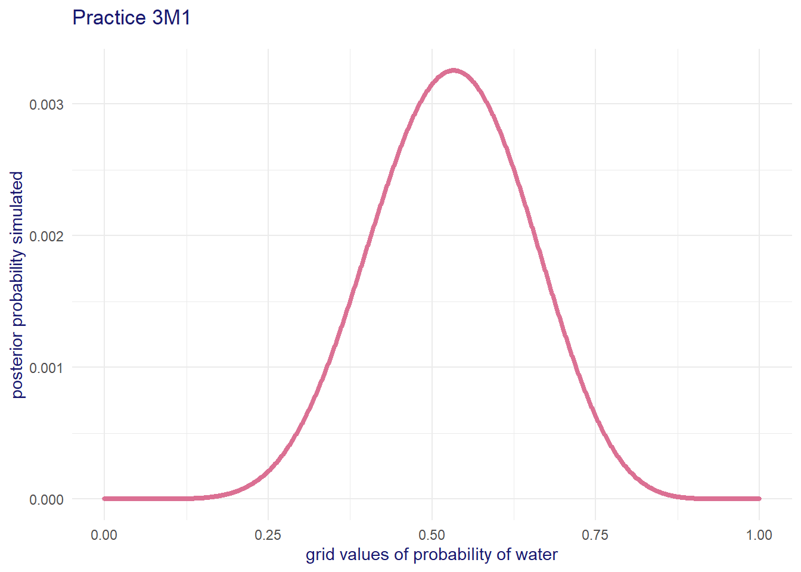
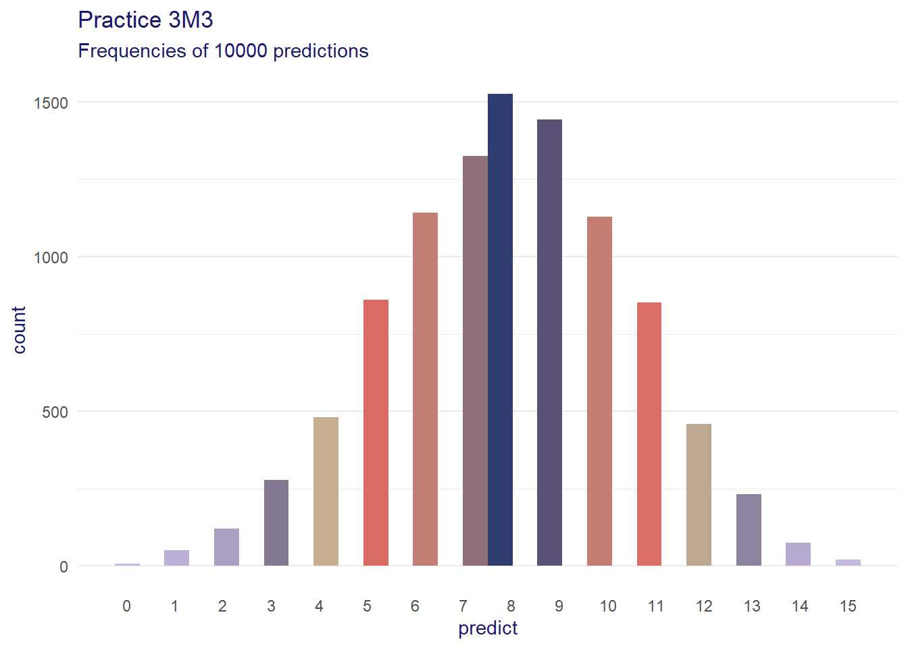
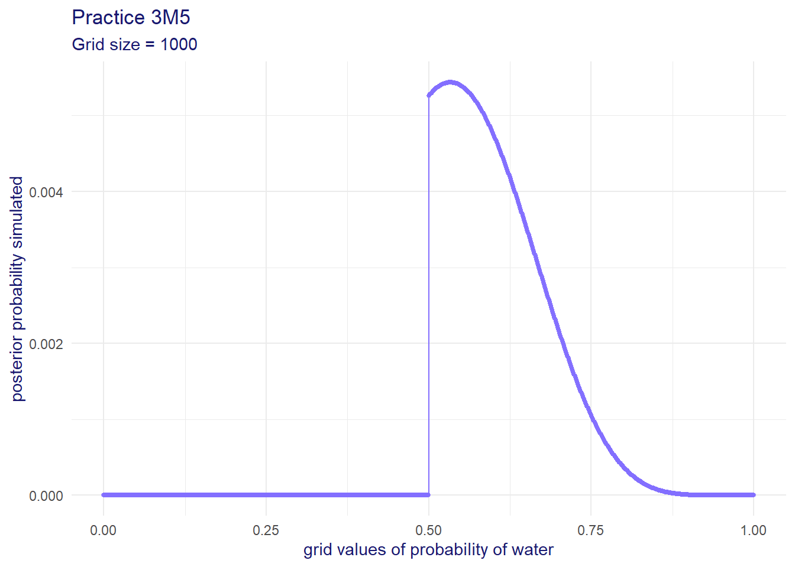
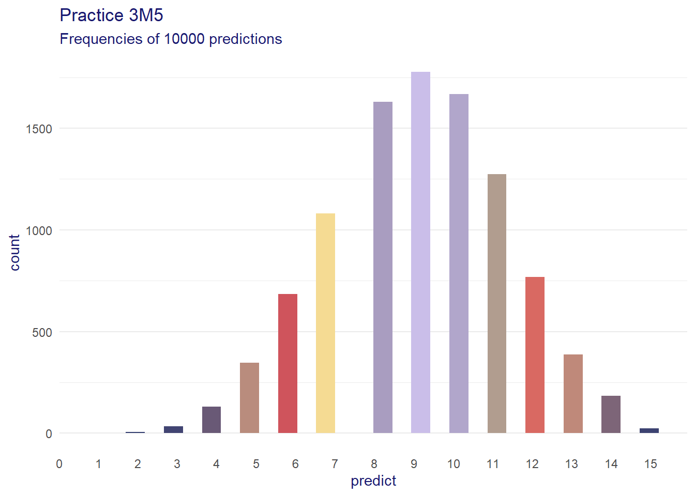
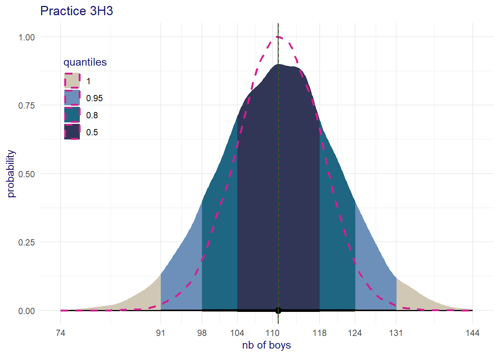
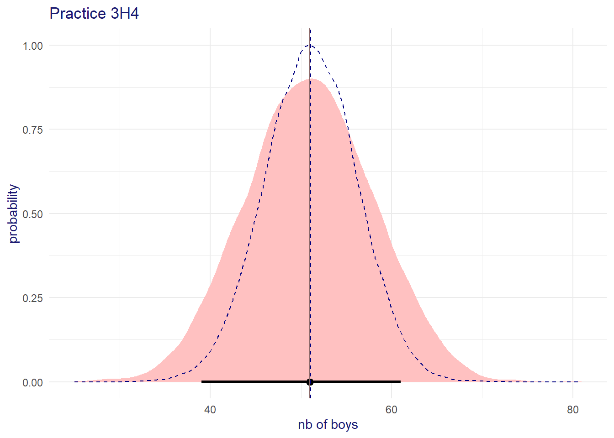
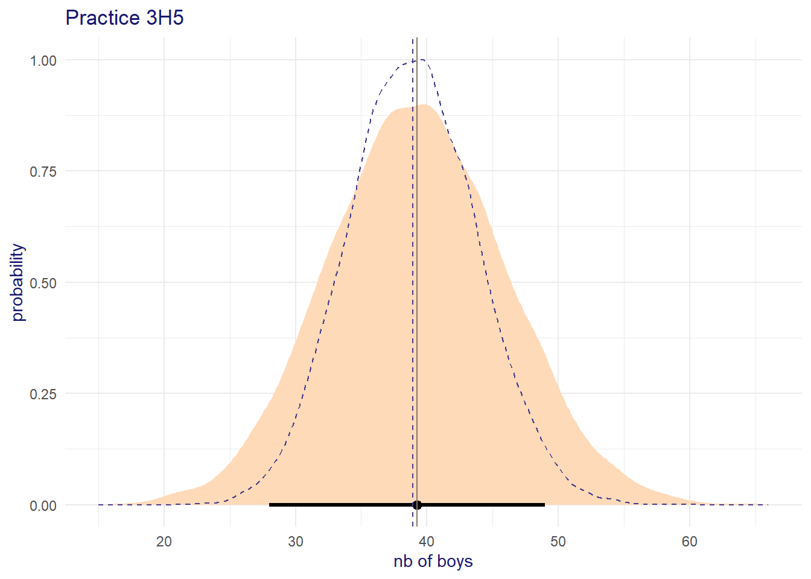

# The default theme used by ggplot2
ggplot2::theme_set(theme_minimal())
ggplot2::theme_update(title = element_text(color = "midnightblue"))3 Sampling the Imaginary
The default theme used by ggplot2
3E1
The samples used for the easy practices.
easy_samples <- list()
easy_samples <- within(easy_samples, {
p_grid <- seq(from = 0, to = 1, length.out = 1000)
prior <- rep(1, length(p_grid))
likelihood <- dbinom(x = 6, size = 9, prob = p_grid)
posterior <- likelihood * prior
posterior <- posterior / sum(posterior)
set.seed(100)
data <- sample(x = p_grid, size = 1e4, prob = posterior, replace = TRUE)
})
Warning
Published solution on internet has 5 instead of 4! I verified the code several times.
The nb of samples below 0.2 is
# nb of samples < 0.2
nb <- sum(easy_samples$data < 0.2)
# the proportion
prop <- nb / length(easy_samples$data)
sprintf("%d samples representing %0.2f%%", nb, 100 * prop)[1] "4 samples representing 0.04%"3E2
# nb of samples < 0.8
nb <- sum(easy_samples$data > 0.8)
# the proportion
prop <- nb / length(easy_samples$data)
sprintf("%d samples representing %0.2f%%", nb, 100 * prop)[1] "1116 samples representing 11.16%"3E3
# nb of samples between 0.2 ad 0.8
nb <- sum(0.2 <= easy_samples$data & easy_samples$data <= 0.8)
# the proportion
prop <- nb / length(easy_samples$data)
sprintf("%d easy_samples$data representing %0.2f%%", nb, 100 * prop)[1] "8880 easy_samples$data representing 88.80%"3E4
quantile(x = easy_samples$data, probs = 0.2) 20%
0.5185185 3E5
quantile(x = easy_samples$data, probs = 1 - 0.2) 80%
0.7557558 3E6
This is the posterior high density interval.
with rethinking
# with rethinking
rethinking::HPDI(easy_samples$data, prob = 0.66) |0.66 0.66|
0.5085085 0.7737738 and with ggdist, we get the mean as a bonus and in a dataframe format.
# with ggdist
ggdist::mean_hdi(easy_samples$data, .width = 0.66) y ymin ymax .width .point .interval
1 0.6348022 0.5085085 0.7737738 0.66 mean hdi3E7
This is the usual quantile, symmetric, interval.
with rethinking
# with rethinking
rethinking::PI(easy_samples$data, prob = 0.66) 17% 83%
0.5025025 0.7697698 with ggdist
# with ggdist
ggdist::mean_qi(easy_samples$data, .width = 0.66) y ymin ymax .width .point .interval
1 0.6348022 0.5025025 0.7697698 0.66 mean qi3M1
Create the grid
sim03M01 <- list()
sim03M01 <- within(sim03M01, {
n_success <- 8
n_trials <- 15
data <- data.frame(
p_grid = seq(from = 0, to = 1, length.out = 1000),
prior = 1) %>%
mutate(
likelihood = dbinom(x = n_success, size = n_trials, prob = p_grid),
posterior = (likelihood * prior) / sum(likelihood * prior)
)
stopifnot(near(sum(data$posterior), 1))
})ggplot(data = sim03M01$data, mapping = aes(x = p_grid, y = posterior)) +
geom_point(size = 1, color = "palevioletred", alpha = 0.9) +
theme(legend.position = "none") +
labs(title = "Practice 3M1",
subtitle = sprintf("Grid size = %d", nrow(sim03M01)),
x = "grid values of probability of water",
y = "posterior probability simulated")
3M2
Create the sampled data
set.seed(173)
data03M02 <- sim03M01$data |>
slice_sample(n = 1e4, weight_by = posterior, replace = TRUE) |>
mutate(id = n()) |>
relocate(.before = p_grid)and find the HPDI
# HPDI with rethinking
rethinking::HPDI(data03M02$p_grid, prob = 0.9) |0.9 0.9|
0.3293293 0.7207207 # HPDI with ggdist
data03M02 |>
ggdist::mean_hdi(p_grid, .width = 0.9)# A tibble: 1 × 6
p_grid .lower .upper .width .point .interval
<dbl> <dbl> <dbl> <dbl> <chr> <chr>
1 0.529 0.329 0.721 0.9 mean hdi 3M3
Constructing a posterior prediction by simulating \(W\) with the sampled \(p\). See the R code 3.26, p. 66.
# using the sampled p we simulate
data03M03 <- data03M02 |>
mutate(predict = rbinom(n = n(), size = sim03M01$n_trials, prob = p_grid))
# data03M03and using it to calculate the prob of having 8 \(W\) in 15 trials
sum(data03M03$predict == 8 ) / length(data03M03$predict)[1] 0.1525the histogram of the predictions is
colr <- paletteer::paletteer_d("Manu::Hoiho")
ggplot(data03M03, aes(x=predict)) +
geom_histogram(aes(fill = after_stat(count))) +
scale_x_continuous(breaks = 0:15) +
scale_fill_gradientn(colors = colr) +
theme(legend.position = "none",
panel.grid.major.x = element_blank(),
panel.grid.minor.x = element_blank()) +
labs(title = "Practice 3M3",
subtitle = sprintf("Frequencies of %d predictions", nrow(data03M03)))`stat_bin()` using `bins = 30`. Pick better value with `binwidth`.
3M4
Prob of 6 \(W\) in 9 tosses with the post dist of 8 \(W\) in 15 tosses. Same process as in 3M3.
post_pred <- rbinom(n = nrow(data03M03), size = 9, prob = data03M03$p_grid)
sum(post_pred == 6 ) / length(post_pred)[1] 0.17443M5
Create the grid
grid03M05 <- data.frame(
p_grid = seq(from = 0, to = 1, length.out = 1000)) |>
mutate(
prior = ifelse(p_grid < 0.5, 0, 1),
likelihood = dbinom(x = 8, size = 15, prob = p_grid),
posterior = (likelihood * prior) / sum(likelihood * prior))
stopifnot(near(sum(grid03M05$posterior), 1))ggplot(data = grid03M05, mapping = aes(x = p_grid, y = posterior)) +
geom_point(size = 1, color = "slateblue1", alpha = 0.9) +
geom_line(color = "slateblue1") +
theme(legend.position = "none") +
labs(title = "Practice 3M5",
subtitle = sprintf("Grid size = %d", nrow(grid03M05)),
x = "grid values of probability of water",
y = "posterior probability simulated")
Create the sampled data
set.seed(100)
data03M05 <- grid03M05 |>
slice_sample(n = 1e4, weight_by = posterior, replace = TRUE) %>%
mutate(id = n(), .before = p_grid)and find the HPDI
# HPDI with rethinking
rethinking::HPDI(data03M05$p_grid, prob = 0.9) |0.9 0.9|
0.5005005 0.7097097 # HPDI with ggdist
data03M05 |>
ggdist::mean_hdi(p_grid, .width = 0.9)# A tibble: 1 × 6
p_grid .lower .upper .width .point .interval
<dbl> <dbl> <dbl> <dbl> <chr> <chr>
1 0.605 0.501 0.710 0.9 mean hdi Constructing a posterior prediction by simulating \(W\) with the sampled \(p\).
# using the sampled p we simulate the water
data03M05 <- data03M05 |>
mutate(predict = rbinom(n = n(), size = 15, prob = p_grid))the histogram of the predictions is
colr <- paletteer::paletteer_d("Manu::Hoiho", direction = -1)
ggplot(data03M05, aes(x=predict)) +
geom_histogram(aes(fill = after_stat(count))) +
scale_x_continuous(breaks = 0:15) +
scale_fill_gradientn(colors = colr) +
theme(legend.position = "none",
panel.grid.major.x = element_blank(),
panel.grid.minor.x = element_blank()) +
labs(title = "Practice 3M5",
subtitle = sprintf("Frequencies of %d predictions", nrow(data03M05)))`stat_bin()` using `bins = 30`. Pick better value with `binwidth`.
3M6
We perform a sampling from a grid as in section 3.1 but, this time, with a grid covering two variables: the percentage of water (probability of success) \(p_water\) as well as the nb of tosses (trials) that is \(n_tosses\).
The assumed prior for \(p_water\) is flat. You can change this at your discretion.
p_water <- seq(from = 0, to = 1, by = 0.01)
n_tosses <- seq(from = 500, to = 5000, by = 500)
the_grid <- expand_grid(p_water, n_tosses)
# assume flat uniform prior, feel free to change it
the_grid$prior <- rep(1, times = nrow(the_grid))
stopifnot(nrow(the_grid) == length(p_water) * length(n_tosses))and we compute the posterior probability of every \(p_water\) in the grid, given \(n_tosses\). Since we don’t have \(y\), that is the observed nb of successes, we simulate them, assuming \(p=0.7\) with rbinom(x = 1, size = the_grid$n_tosses, prob = 0.7).
# compute the x, nb of success using rbinom()
set.seed(3)
x_water <- rbinom(n = 1, size = the_grid$n_tosses, prob = 0.7)
likelihood <- dbinom(x = x_water, size = the_grid$n_tosses, prob = the_grid$p_water)
# compute the posterior of p
posterior <- likelihood * the_grid$prior
posterior <- posterior / sum(posterior)
the_grid$posterior <- posterior
# the posterior must add up to 1
stopifnot(sum(the_grid$posterior) == 1)and we finally create a matrix of simulations where every column of the matrix is a simulated sample using a given nb of tosses.
# create matrix of samples, each column is an assumed nb of tosses
msamples <- sapply(X = n_tosses, FUN = function(x){
a_grid <- the_grid[the_grid$n_tosses == x, ]
samples <- sample(x = a_grid$p_water, size = 1000, prob = a_grid$posterior, replace = TRUE)
return(samples)
})
# name the columns after the nb of tosses
colnames(msamples) <- n_tossesand the final answer is given by finding the width of the 99% interval fro every assumption of \(n_tosses\) (column). The quantile interval rethinking::PI(x, prob = 0.99) but is used, the high-density interval rethinking::HPDI(x, prob = 0.99) could also used.
# find the width of the range for each sample (column)
(apply(X = msamples, MARGIN = 2, FUN = function(x) diff(rethinking::PI(x, prob = 0.99)))) 500 1000 1500 2000 2500 3000 3500 4000 4500 5000
0.11 0.07 0.06 0.04 0.03 0.02 0.03 0.02 0.02 0.01 The answer is therefore that the nb of tosses should >= 2000, assuming a flat uniform prior, using increments of 500 for the nb of tosses.
3H1
Loading the data from the rethinking package
data(homeworkch3)Get the prior estimate from the data and calculate the posterior
n_boys <- sum(birth1) + sum(birth2)
n_births <- length(birth1) + length(birth2)
p_boys <- n_boys / n_births
p_grid <- seq(from = 0, to = 1, by = 0.01)
p_prior <- rep(1, times = length(p_grid))
df <- data.frame(
p_grid = p_grid,
prior = p_prior) %>%
mutate(
likelihood = dbinom(x = n_boys, size = n_births, prob = p_grid),
posterior = (likelihood * prior) / sum(likelihood * prior)
)
stopifnot(sum(df$posterior) == 1)using the position of the maximum posterior prob. we find the p that maximize the posterior
(df$p_grid[which.max(df$posterior)])[1] 0.553H2
samples <- sample(x = df$p_grid, size = 1e4, prob = df$posterior, replace = TRUE)
# 50%, 89%, 97% with HPDI
rethinking::HPDI(samples, prob = c(0.5, 0.89, 0.97))|0.97 |0.89 |0.5 0.5| 0.89| 0.97|
0.47 0.49 0.54 0.58 0.60 0.62 and with gdist
ggdist::mean_hdi(.data = samples, .width = c(0.50, 0.89, 0.97)) y ymin ymax .width .point .interval
1 0.554682 0.54 0.58 0.50 mean hdi
2 0.554682 0.49 0.60 0.89 mean hdi
3 0.554682 0.47 0.62 0.97 mean hdi3H3
# do a posterior prediction
pred <- data.frame(pred =
rbinom(n = length(samples), size = n_births, prob = samples)
)
# avg nb of boys in the simulation
mean(pred$pred)[1] 110.9704# using the HPDI to find the interval
rethinking::HPDI(pred$pred, prob = 0.89)|0.89 0.89|
94 126 or getting the mean and interval all at once with ggdist
ggdist::mean_hdi(.data = pred$pred, .width = 0.89) y ymin ymax .width .point .interval
1 110.9704 94 126 0.89 mean hdirng <- range(pred$pred)
qtl <- c(0.5, 0.8, 0.95, 1)
x_breaks <- ggdist::mean_qi(.data = pred$pred, .width = qtl) %>%
select(y, ymin, ymax) %>%
pivot_longer(cols = c("y", "ymin", "ymax")) %>%
distinct(value) %>%
arrange(value) %>%
pull() %>%
as.integer()
# the actual binomial distribution of the observations
set.seed(3)
dist_binom <- data.frame(x = rbinom(n = length(samples), size = n_births, prob = p_boys))
ggplot(pred, aes(x = pred)) +
stat_halfeye(aes(fill=after_stat(level)),
point_interval = ggdist::mean_qi, .width = qtl) +
geom_density(data = dist_binom, mapping = aes(x, y = after_stat(scaled)),
color = "violetred", linetype = "dashed", size = 1) +
geom_vline(xintercept = c(mean(dist_binom$x), mean(pred$pred)),
color = c("violetred", "darkgreen"), linetype = c("dashed", "solid")) +
scale_x_continuous(breaks = x_breaks,limits = rng) +
scale_fill_paletteer_d(palette = "Manu::Takahe", direction = -1,
na.translate = FALSE) +
theme(legend.position = c(0.1,0.75)) +
labs(title = "Practice 3H3", x = "nb of boys", y = "probability", fill = "quantiles")Warning: Using `size` aesthetic for lines was deprecated in ggplot2 3.4.0.
ℹ Please use `linewidth` instead.Warning: Using the `size` aesthietic with geom_segment was deprecated in ggplot2 3.4.0.
ℹ Please use the `linewidth` aesthetic instead.
3H4
Finding the posterior dist with only the first-born
n_boys <- sum(birth1)
n_births <- length(birth1)
p_boys <- n_boys / n_births
p_grid <- seq(from = 0, to = 1, by = 0.01)
p_prior <- rep(1, times = length(p_grid))
df <- data.frame(
p_grid = p_grid,
prior = p_prior) %>%
mutate(
likelihood = dbinom(x = n_boys, size = n_births, prob = p_grid),
posterior = (likelihood * prior) / sum(likelihood * prior)
)
stopifnot(sum(df$posterior) == 1)and create a sample of the \(p\) from the grid and its posterior.
set.seed(3)
samples <- sample(x = df$p_grid, size = 1e4, prob = df$posterior, replace = TRUE)# do a posterior prediction
pred <- data.frame(pred =
rbinom(n = length(samples), size = n_births, prob = samples)
)
# avg nb of boys in the simulation
mean(pred$pred)[1] 50.9552# using the HPDI to find the interval of prior
rethinking::HPDI(pred$pred, prob = 0.89)|0.89 0.89|
39 61 or getting the prior’s mean and interval all at once with ggdist
ggdist::mean_hdi(.data = pred$pred, .width = 0.89) y ymin ymax .width .point .interval
1 50.9552 39 61 0.89 mean hdirng <- range(pred$pred)
# the acutal binomial distribution of the observations
set.seed(3)
dist_binom <- data.frame(x = rbinom(n = length(samples), size = n_births, prob = p_boys))
ggplot(pred, aes(x = pred)) +
stat_halfeye(point_interval = ggdist::mean_hdi, .width = 0.89, fill = "rosybrown1") +
geom_density(data = dist_binom, mapping = aes(x, y = after_stat(scaled)),
color = "navy", linetype = "dashed") +
geom_vline(xintercept = c(mean(dist_binom$x), mean(pred$pred)),
color = c("navy", "rosybrown4"), linetype = c("dashed", "solid")) +
scale_x_continuous(limits = rng) +
labs(title = "Practice 3H4", x = "nb of boys", y = "probability")
3H5
The idea here is that, if boys are independent of girls then \(P(boy \mid girl) = P(boy)\) when \(boy\) and \(girl\) are independent.
Finding the posterior dist with boys born after a girl.
# births of girls followed by boy
girlboy <- (birth1 == 0) & (birth2 == 1)
n_girlboy <- sum(girlboy)
n_births <- length(girlboy)
p_girlboy <- n_girlboy / n_births
p_grid <- seq(from = 0, to = 1, by = 0.01)
p_prior <- rep(1, times = length(p_grid))
df <- data.frame(
p_grid = p_grid,
prior = p_prior) %>%
mutate(
likelihood = dbinom(x = n_girlboy, size = n_births, prob = p_grid),
posterior = (likelihood * prior) / sum(likelihood * prior)
)
stopifnot(sum(df$posterior) == 1)Get a sample of \(p\) from the grid using the posterior as probability of the given value. Then make a predicition of boys using these sampled \(p\) values
# sample the grid using the posterior probabilities
samples <- sample(x = df$p_grid, size = 10000, replace = TRUE, prob = df$posterior)
# simulate births
pred <- data.frame(pred =
rbinom(n = length(samples), size = n_births, prob = samples)
)
# using the HPDI to find the interval
HPDI(pred$pred, prob = 0.89)|0.89 0.89|
28 49 and visualize
# draw a graph with the result
rng <- range(pred$pred)
# the acutal binomial distribution of the observations
set.seed(3)
dist_binom <- data.frame(x = rbinom(n = length(samples), size = n_births, prob = p_girlboy))
ggplot(pred, aes(x = pred)) +
stat_halfeye(point_interval = ggdist::mean_hdi, .width = 0.89, fill = "peachpuff") +
geom_density(data = dist_binom, mapping = aes(x, y = after_stat(scaled)),
color = "slateblue4", linetype = "dashed") +
geom_vline(xintercept = c(mean(dist_binom$x), mean(pred$pred)),
color = c("slateblue4", "peachpuff4"), linetype = c("dashed", "solid")) +
scale_x_continuous(limits = rng) +
labs(title = "Practice 3H5", x = "nb of boys", y = "probability")
The average nb of first boys was about 50, see 3H4 above. Now, using the second born boy given a girl was born, the average is 40. It should remain about the same if boys were independent f girls and it is obviously not.
Conclusion: Birth of boy is not independent of girls.